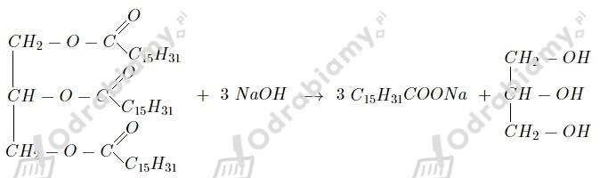
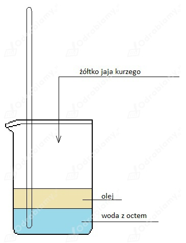

Równanie reakcji:

a)
faza wodna: wodny roztwór octu lub soku cytrynowego
faza olejowa: olej
b)
Aby zbadać właściwości emulgatora w majonezie należy przeprowadzić następujące doświadczenie:
Sprzęt: zlewka, szklana bagietka
Odczynniki: wodny roztwór octu, olej, żółtko jaja kurzego
Schemat:

Opis: W zlewce mieszamy wodny roztwór octu i olej. Następnie dodajemy żółtko jaja kurzego i mieszamy do uzyskania jednorodnej masy.
Obserwacje: Wodny roztwór octu z olejem tworzy dwie niemieszające się fazy. Po dodaniu żółtka jaja kurzego powstaje biała, gęsta, jednorodna masa.
Wnioski: Emulgator w majonezie sprawia, iż masa się nie rozwarstwia i pozostaje jednorodna.
Obliczanie zawartości procentowej olejku w płatkach:
Odpowiedź: Zawartość procentowa olejku różanego w płatkach róży to 0,033%.
Zaczynamy od obliczenia masy etanolu potrzebnej do otrzymania 50 g toniku:
Liczymy objętość etanolu:
Odpowiedź: Do produkcji 50 g toniku potrzeba 12,66 cm3 etanolu.
Liczymy masę poszczególnych składników:
- skrobia lub kreda:
- talk:
- tlenek cynku:
- stearynian cynku:
Składniki wraz z funkcjami:
- Aqua - woda - faza wodna
- Mineral Oil - olej mineralny - faza olejowa
- Glycerin - gliceryna - substancja nawilżająca
- Stearic Acid - kwas stearynowy - zabezpiecza przed utratą wody
- Cera Alba - wosk pszczeli (bielony) - substancja natłuszczająca, tworzy warstwę ochronną skóry
- Citric Acid - kwas cytrynowy - funkcja rozświetlająca, zapobiega przebarwieniom
- Citronellol - cytronelol - substancja zapachowa
- Eugenol - eugenol - substancja zapachowa